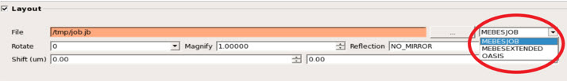
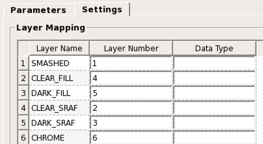

You must provide the
layout file and transformation information to align the layout file
with the mask inspection result. The layout data formats currently
supported are MEBES job decks, extended MEBES job decks, and OASIS
files.
Procedure
- In the Parameters tab
of Calibre DefectClassify, click the Layout radio
box.
- Select the input type in the pulldown menu
on the right side of the pane, either MEBESJOB, MEBESEXTENDED, or
OASIS.
- Enter the
layout file and transformation parameters in the Layout pane.
Figure 1. Layout
Data Information
File —
Specify the layout file path.
Rotate —
Specify any rotation to be applied to layout data to align with
mask data. The values can be 0, 90, 280 or 270. Rotation is performed
around point (76,200,000 nm, 76,200,000 nm).
Magnify —
Specify the magnification level of layout data. Currently, this
is 1 and cannot be changed.
Reflection —
Specify optional mirroring to be applied to layout data. Possible values
are NO_MIRROR, X_MIRROR, and Y_MIRROR. The default is NO_MIRROR.
Invert —
Specify layout tones be inverted to synchronize with mask data.
Click the check box if the mask is of negative tone.
Shift —
Specify the amount of translation to be applied to the layout.
- Calibre
DefectClassify can detect defects in SRAF (dark and clear) or Fill
(dark and clear) regions only if the layout data file contains the
corresponding polygons in separate layers. If this information is
available, click the Settings tab in Calibre
DefectClassify and provide the mapping for these Layer Name(s) to
Layer Number(s) and Data Type(s) (see Figure 2). If the layout data is
not split out, then only map the SMASHED Layer Name.
Note: At minimum, the SMASHED Layer Name must be mapped.
Figure 2. Layer
Mapping